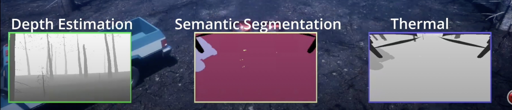

Getting Started
Download
To start off, please download the FIReVision executable to use our simulator.
Once you have downloaded the ZIP file, extract all of the included files and then select the “FireViision.exe” file to launch the simulation.
Then select “no” to use the quadrotor (if prompted)
When you run the FIReVision executable, the wildfire environment will start out in AirSim mode with the drone on the ground stationary.
For more ease while running the project, press F11 to exit fullscreen mode. Note: More navigation features will come in later versions.
Setup
Go into your system’s “Documents > AirSim > settings.json” and paste the code below into that file. Make sure to save and close when you’re done.
{ "SeeDocsAt": "https://github.com/Microsoft/AirSim/blob/main/docs/settings.md", "SettingsVersion": 1.2, "SimMode": "Multirotor", "ViewMode": "SpringArmChase", "ClockSpeed": 1.0, "SegmentationSettings": { "InitMethod": "", "MeshNamingMethod": "", "OverrideExisting": false }, "Vehicles": { "drone_1": { "VehicleType": "SimpleFlight", "DefaultVehicleState": "Armed", "EnableCollisionPassthrogh": false, "EnableCollisions": true, "AllowAPIAlways": true, "RC": { "RemoteControlID": 0, "AllowAPIWhenDisconnected": false }, "Sensors": { "Imu" : { "SensorType": 2, "Enabled": true } }, "Cameras": { "front_center_custom": { "CaptureSettings": [ { "PublishToRos": 1, "ImageType": 0, "Width": 640, "Height": 480, "FOV_Degrees": 27, "DepthOfFieldFstop": 2.8, "DepthOfFieldFocalDistance": 200.0, "DepthOfFieldFocalRegion": 200.0, "TargetGamma": 1.5 } ], "X": 0.50, "Y": 0, "Z": 0.10, "Pitch": 0, "Roll": 0, "Yaw": 0 }, "bottom_forward_thermal": { "CaptureSettings": [ { "PublishToRos": 1, "ImageType": 10, "Width": 640, "Height": 512, "FOV_Degrees": 95, "DepthOfFieldFstop": 2.8, "DepthOfFieldFocalDistance": 200.0, "DepthOfFieldFocalRegion": 200.0, "TargetGamma": 1.5 } ], "X": 0.0, "Y": 0, "Z": 0.0, "Pitch": -45, "Roll": 0, "Yaw": 0 }, "bottom_forward_infrared": { "CaptureSettings": [ { "PublishToRos": 1, "ImageType": 0, "Width": 640, "Height": 480, "FOV_Degrees": 95, "DepthOfFieldFstop": 2.8, "DepthOfFieldFocalDistance": 200.0, "DepthOfFieldFocalRegion": 200.0, "TargetGamma": 1.5 } ], "X": 0.0, "Y": 0, "Z": 0.0, "Pitch": -45, "Roll": 0, "Yaw": 0 } }, "X": 2, "Y": 0, "Z": 0, "Pitch": 0, "Roll": 0, "Yaw": 0 } }, "SubWindows": [ {"WindowID": 0, "ImageType": 0, "CameraName": "front_center_custom", "Visible": true}, {"WindowID": 1, "ImageType": 5, "CameraName": "bottom_forward_thermal", "Visible": true}, {"WindowID": 2, "ImageType": 10, "CameraName": "bottom_forward_thermal", "Visible": true} ] }
Drone Controls
Before we can start moving in AirSim mode we need to run the script that allows us to move. You can either use the windows key or press alt + tab to momentarily navigate out FireVision. Make sure you have installed the correct version of the dependencies Then, from the project, open and run objectDetection.py script. (If this does not work, try restart your PC and running the script with all installed dependencies again). This will allow us to detect objects as well as control the drone. Finally, refer to the following table to control the drone:
Key |
Action |
|---|---|
W |
Foward |
A |
Left |
S |
Backward |
D |
Foward |
Q |
Rotate Left |
E |
Rotate Right |
X |
Up |
Z |
Down |
Objection Detection
When running objectDetection.py, you may have noticed a small window opening. This window displays the detection of objects in the environment, specifically crew and vehicles. It surrounds a blue box around the objects and labels them according to their name in the environment. We soon hope to detect the rest of the environment (e.g., the trees and fires). The objection detection window can be found in the top right of the screen.

Sensors
When running AirSim in the FIReVision environment, three cameras should be displayed at the bottom of the screen. The leftmost camera shows RGB image, the middle camera shows semantic segmentation, and the rightmost camera shows thermal image. The code above should ensure that the cameras are set up in this fashion. However, if you don’t want a certain camera or prefer something else, please look at AirSim’s documentation on the Images API.
{kind=link}